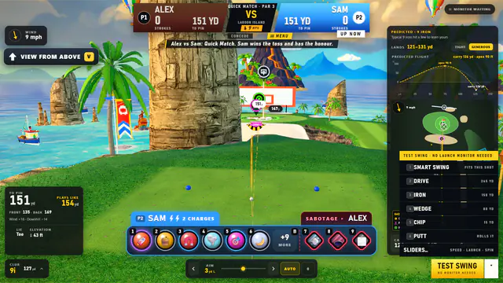

Connect
Get your launch monitor talking to the game
Your launch monitor does not talk to a game directly. A small program, its connector, takes each shot and hands it to whichever simulator is listening. This page explains how to make that simulator Sim Clash: what to close, what to open, what to type, and how sure we are that it works with your unit. No launch monitor? Test swings need none.
The short version
The game walks you through this itself. The first time it starts, and again from SETTINGS > LAUNCH MONITOR > SET UP MY LAUNCH MONITOR, a wizard asks which launch monitor you have and shows the steps for that one, with this PC's real address filled in and a live status light. If you would rather read first:
Close GSPro (or any other simulator). Only one program can listen for the launch monitor at a time.
Start Sim Clash.
Start your launch monitor's connector the way you would for GSPro.
Hit a ball. The chip in the corner of the game turns green and the shot flies.
Honest status. One launch monitor has been tested on a real rig: a Foresight GCQuad, the developer's own. Everything else on this page comes from the makers' and the connectors' own documentation and source code, and is labelled by how sure that makes us. If you try yours, please tell us how it went.
How a shot gets to a game
When you hit a ball, the launch monitor measures it: ball speed, launch angle, direction, spin. Those numbers have to travel to the program that draws the flight. The most widely used way to do that between products from different makers is GSPro Open Connect: a small, publicly documented convention in which the launch monitor's connector opens a network connection to the simulator on TCP port 921 and sends each shot as a short piece of text.
"A network connection" sounds bigger than it is. Both programs are usually on the same PC, and the connection never leaves it. The port number is just the door the simulator waits behind: GSPro's "Open API" waits behind door 921, so that is where connectors knock.
Sim Clash waits behind the same door and answers the same way. A connector that sends its shots to GSPro's Open API, and has no other tie to GSPro, can send them to Sim Clash instead, as long as GSPro is closed. The game only needs ball data; club data is optional.
- Launch monitormeasures the ball
- Its connectora program on your PC
- Port 921Open Connect
- Sim Clashplays the shot
The catch. "Works with GSPro" does not mean "works with anything that listens on port 921". GSPro reaches most launch monitors through connections built into its own connector program: Uneekor, FlightScope, Garmin, Rapsodo, Full Swing, Square, ProTee and others each have their own mode there. Those do not use the Open API and cannot be pointed at another program. Only four kinds of setup can feed this game: a maker's own Open API connector, an open-source launch monitor, a community connector, and a Foresight GC unit through the bridge built into the game.
Before anything else
Close GSPro. Only one program at a time can listen on port 921. If GSPro, or any other simulator that listens for Open Connect, is running, Sim Clash cannot have the port and no shots will arrive. The game says so on screen (CLOSE GSPRO / ANOTHER PROGRAM IS USING PORT 921) and takes the port by itself a few seconds after you close the other program: no restart needed.
Then start your connector, so that it finds something listening when it looks for the simulator.
Windows Firewall asks about the game the first time it runs, because it listens for launch monitors. If your connector runs on this same PC you can refuse: local connections still work. If the connector runs on another device (a second PC, a Raspberry Pi), allow private networks only.
The address and the port
Most connectors that can be pointed anywhere have two boxes: an IP address (which computer) and a port (which door). For Sim Clash:
| Where the connector runs | IP address | Port |
|---|---|---|
| On the same PC as the game (the usual case) | 127.0.0.1 | 921 |
| On another device on your network | the game PC's network address, such as 192.168.1.20 | 921 |
127.0.0.1 always means "this computer". It is also what most connectors already have filled in, because it is where GSPro lives: with GSPro closed and Sim Clash open, such a connector needs no change at all.
A connector that only sends to this PC
Some connectors have no address box: their target is fixed at 127.0.0.1, port 921. That is fine. Run the connector on the same PC as the game, leave the game on its default port, and they meet.
A connector that insists on finding GSPro
A few connectors check that GSPro itself is running before they will connect, but only when their address is the local one. The MLM2PRO-GSPro-Connector does this: with 127.0.0.1 it looks for GSPro's own window and stops with "GSPRO API Window Not Found". The way round it is to enter this PC's network address instead of 127.0.0.1. It is the same computer, reached by its other name, and the connector skips the check.
To find that address, use the one the game's wizard shows, or open a Windows terminal, run ipconfig and read the line IPv4 Address (it usually starts 192.168. or 10.). If Windows asks about the firewall, allow the game on private networks.
A connector with no address setting at all that looks for GSPro by itself is one of GSPro's own built-in connections. It cannot be pointed at the game.
Which launch monitors
This list is generated from the catalogue the game's own connection wizard uses, so the site, the game and the documentation say the same thing. It holds 30 launch monitors, was last checked on 2026-11-26, and is careful on purpose: nothing is called tested unless a ball has been hit with it on a real rig. Today that is 1 unit.
Tested (1)
Works on a real rig.
| Launch monitor | Models | Comes in through | Its steps |
|---|---|---|---|
| Foresight GCQuad | GCQuad | the built-in Foresight bridge and GSPconnect (the connector inside your own GSPro installation) | Steps |
Expected to work (8)
Its own connector is documented to send Open Connect, or it is the same connector as a tested unit. Nobody has tried it with this game yet.
| Launch monitor | Models | Comes in through | Its steps |
|---|---|---|---|
| Foresight GC3 / GCHawk / QuadMAX / Falcon | GC3, GCHawk, GCQuad MAX (QuadMAX), Falcon | the built-in Foresight bridge and GSPconnect (the connector inside your own GSPro installation) | Steps |
| Bushnell Launch Pro | Launch Pro | the built-in Foresight bridge and GSPconnect (the connector inside your own GSPro installation) | Steps |
| Square Golf (Home) | Square Golf launch monitor (Home) | SQG GSPro Connect (Square's own) | Steps |
| NVisage N1 | NVisage N1 | N-Connect (NVisage's own) | Steps |
| Bullseye LM | Bullseye LM | Bullseye's own software (its GSPro / Open API connection) | Steps |
| GolfIn Idra | GolfIn Idra | GolfIn's own software (its GSPro / Open API connection) | Steps |
| PiTrac | PiTrac (open-source, build it yourself) | PiTrac's own GSPro interface | Steps |
| OpenFlight | OpenFlight (open-source, build it yourself) | OpenFlight's own GSPro (OpenConnectV1) connector | Steps |
Community / unofficial (13)
Needs an unofficial helper program between the launch monitor and the game. Untested here.
| Launch monitor | Models | Comes in through | Its steps |
|---|---|---|---|
| Foresight GC2 | GC2, GC2 + HMT | gspro-gc2-connector | Steps |
| Uneekor EYE XO / XO2 / EYE MINI / QED | EYE XO, EYE XO2, EYE MINI, EYE MINI LITE, QED | Uneekor VIEW watcher (tools/uneekor-watch.js, part of this project) | Steps |
| Garmin Approach R10 | Approach R10 | gsp-r10-adapter | Steps |
| Garmin Approach R50 | Approach R50 | MLM2PRO-GSPro-Connector (device: Garmin R50) | Steps |
| FlightScope Mevo+ / Mevo Gen2 / Xi | Mevo+, Mevo Gen2, Xi | flighthook | Steps |
| SkyTrak / SkyTrak+ | SkyTrak+, SkyTrak (original) | OpenSkyPlus2 (with its GSPro plugin) | Steps |
| Rapsodo MLM2PRO | MLM2PRO | MLM2PRO-GSPro-Connector | Steps |
| Square Golf Omni | Square Omni | flighthook | Steps |
| Full Swing KIT | Full Swing KIT | MLM2PRO-GSPro-Connector (device: Fullswing Kit) | Steps |
| TrackMan | TrackMan 4, TrackMan iO | MLM2PRO-GSPro-Connector (device: Trackman) | Steps |
| Voice Caddie Swing Caddie SC4 / SC4 Pro | Swing Caddie SC4, Swing Caddie SC4 Pro | MLM2PRO-GSPro-Connector (device: Voice Caddie SC4) | Steps |
| TruGolf Apogee | TruGolf Apogee | MLM2PRO-GSPro-Connector (device: TruGolf Apogee Apex) | Steps |
| ProTee VX | ProTee VX | VX Connector | Steps |
Not supported yet (8)
No way in that we know of. You can still play with test swings.
| Launch monitor | Why not |
|---|---|
| FlightScope X3 / X2 / Mevo (original) | No connector was found that sends these units' shots as Open Connect. GSPro reaches the X2 and X3 through its own private FlightScope connection; FlightScope says the original Mevo does not support simulator courses, and opens the X3C to approved integrators only. |
| OpenLaunch NOVA | The NOVA reaches GSPro through GSPro's own built-in connection, which cannot be pointed at this game. It is the best candidate for a direct connection, though: OpenLaunch publishes a local API (JSON over TCP and WebSocket, found on the network automatically) with an Apache-2.0 developer guide. See the roadmap. |
| OptiShot Nova / BallFlight / Orbit | OptiShot's units run OptiShot's own Orion software. No connector was found that sends their shots to GSPro or as Open Connect, and they are not on GSPro's supported list. (The Nova on GSPro's list is OpenLaunch's, a different product.) |
| Golfzon WAVE | No connector was found that sends the WAVE's shots to GSPro or as Open Connect, and it is not on GSPro's supported list. |
| GolfJoy GDS / GR / Spica | GolfJoy units reach GSPro through GSPro's own built-in connection over a fixed private network link, which cannot be pointed at this game. GolfJoy had an Open API route before that; whether it still works is not known. |
| VTrack | VTrack reaches GSPro through GSPro's own built-in connection, started from VTrack's toolkit. How its shots travel is not documented, and no connector was found that sends them as Open Connect. |
| Bluetees RAINMAKER | The RAINMAKER reaches GSPro through GSPro's own built-in connection (paired with a PIN), which cannot be pointed at this game. |
| Ernest Sports ES16 / ES Tour Plus | No connector was found that sends these units' shots to GSPro or as Open Connect, and they are not on GSPro's supported list. |
If you try any of these, working or not, please tell us in an issue: one report moves a launch monitor up a tier, or stops other people wasting an evening.
Steps for yours
Open your launch monitor below for what you need, the steps, what to type into the connector and what is not known yet. These are the same steps the wizard in the game shows. Every claim has its source at the foot of the entry; the connectors are other people's projects with their own licences, and none of them is part of Sim Clash unless the entry says so.
Nothing on the list matches. See not on the list below.
Foresight GCQuad TestedGCQuad
- Comes in through
- the Foresight bridge built into the game and GSPconnect (the connector inside your own GSPro installation)
- That connector's licence
- GSPro's own: not included with the game
You need
- Your own GSPro installation and licence (Foresight type)
- FSX 2020 or FSX Play, as GSPro asks of every GC unit
Steps
Close GSPro if it is open.
Open GSPconnect from your GSPro folder.
Connect the GCQuad in it, as you do for GSPro.
Leave GSPconnect open and hit a ball.
Good to know
- Experimental. Tested on one GCQuad rig, the developer's own.
- The game's built-in Foresight bridge holds the connector's local port (9050) and reads its shot log: docs/foresight-bridge.md.
- Ball data only: the connector's log has no club data.
- GSPconnect is normally in C:\GSProV1\Core\GSPC. Elsewhere: set the folder in SETTINGS > LAUNCH MONITOR.
Where this comes from
docs/foresight-bridge.md: How the bridge works and what is known about the connector- gspro.gitbook.io/gspro-knowledge-base/setup-and-installation/foresight-sports-and-bushnell-launch-pro-guide.md: GSPro's guide: the Foresight option of GSPro Connect, connection types
- gsprogolf.com/foresight-bushnell.html: All GC users must have FSX 2020 or FSX Play
Foresight GC3 / GCHawk / QuadMAX / Falcon Expected to workGC3, GCHawk, GCQuad MAX (QuadMAX), Falcon
- Comes in through
- the Foresight bridge built into the game and GSPconnect (the connector inside your own GSPro installation)
- That connector's licence
- GSPro's own: not included with the game
You need
- Your own GSPro installation and licence (Foresight type)
- FSX 2020 or FSX Play, as GSPro asks of every GC unit
Steps
Close GSPro if it is open.
Open GSPconnect from your GSPro folder.
Connect your launch monitor in it, as for GSPro.
Leave GSPconnect open and hit a ball.
Good to know
- Not tested on these units. They use the same GSPro connector as the GCQuad, which is the tested one.
- The bridge reads the connector's shot log. Whether every model writes it in the same format is not known.
- Ball data only.
Where this comes from
- gspro.gitbook.io/gspro-knowledge-base/setup-and-installation/foresight-sports-and-bushnell-launch-pro-guide.md: One connection app for GC3, GCQuad, GCHawk, Falcon and the Launch Pro
docs/foresight-bridge.md: Known and not known about the connector's log- gsprogolf.com: GSPro's list of supported Foresight units
Bushnell Launch Pro Expected to workLaunch Pro
- Comes in through
- the Foresight bridge built into the game and GSPconnect (the connector inside your own GSPro installation)
- That connector's licence
- GSPro's own: not included with the game
You need
- Your own GSPro installation and licence (Foresight type)
- A paid Bushnell Gold subscription (a Gold trial is not accepted by GSPro)
Steps
Close GSPro if it is open.
Open GSPconnect from your GSPro folder.
Connect the Launch Pro in it, as you do for GSPro.
Leave GSPconnect open and hit a ball.
Good to know
- Not tested on a Launch Pro. It uses the same GSPro connector as the GCQuad, which is the tested one.
- Ball data only.
Where this comes from
- gsprogolf.com/foresight-bushnell.html: Launch Pro needs paid Gold; trials are not valid
- gspro.gitbook.io/gspro-knowledge-base/setup-and-installation/foresight-sports-and-bushnell-launch-pro-guide.md: Same connection app as the GC units
Foresight GC2 Community / unofficialGC2, GC2 + HMT
- Comes in through
- gspro-gc2-connector
- That connector's licence
- no licence file
You need
- A GC2 paired to this PC over Bluetooth (a COM port)
Steps
Pair the GC2 with this PC over Bluetooth.
Download gspro-gc2-connector and open a terminal there.
Start it with the address and port shown here.
Hit a ball.
What to type into it
--gs-pro-ip- 127.0.0.1
--gs-pro-port- 921
Good to know
- Untested here. GSPro's own Foresight integration does not support the GC2, so this is the only way in.
- A command-line tool: its options are --gs-pro-ip and --gs-pro-port.
Other connectors
- GSPro-gc2-API-Interface (no licence file). Python, GC2 over USB or Bluetooth. The address comes from its Config.txt (default localhost); the port is fixed at 921.
Where this comes from
- github.com/matthew-johnston/gspro-gc2-connector: Source (main.rs, gs_pro.rs): Open Connect client with --gs-pro-ip and --gs-pro-port
- github.com/ParnoldAlmer/GSPro-gc2-API-Interface: Source (OpenAPI.py, gc2USB.py): IP from Config.txt, port 921
- support.foresightsports.com/support/software/gspro-integration: The official integration does not support the GC2
Uneekor EYE XO / XO2 / EYE MINI / QED Community / unofficialEYE XO, EYE XO2, EYE MINI, EYE MINI LITE, QED
- Comes in through
- Uneekor VIEW watcher (tools/uneekor-watch.js, part of this project)
- That connector's licence
- MIT
You need
- Uneekor VIEW running on this PC
Steps
Open Uneekor VIEW and get your unit ready in it.
Start the game: it starts its VIEW watcher by itself.
Hit a ball in VIEW: the watcher sends it to the game.
What to type into it
BIRDIE_OC_HOST- 127.0.0.1
BIRDIE_OC_PORT- 921
Good to know
- Not tested by this project. The watcher comes from Open-Birdie, which this game is built on; it reads the shot files VIEW writes.
- The desktop game (installed, or npm start) starts the watcher by itself when it finds VIEW's ShotData folder on this PC; BIRDIE_NO_WATCH=1 switches that off. Only the game server without its window (npm run start:server) needs the watcher started by hand: npm run watch, with Node.js.
- VIEW reports ball speed in metres per second: the watcher converts it (--speed-scale 2.23694).
- GSPro's own Uneekor connection is private to GSPro and cannot be pointed at this game.
- There is no status line for the watcher in the game yet: the launch monitor light turns on when it has connected.
Other connectors
- MLM2PRO-GSPro-Connector (reads the VIEW window off the screen) (GPL-3.0). EYE MINI and EYE MINI LITE. Enter this PC's network address, not 127.0.0.1 (see the Rapsodo entry for why).
Where this comes from
- github.com/jordan-shilts/Open-Birdie/blob/main/tools/uneekor-watch.js: The watcher's source: reads VIEW's ShotData folder, sends Open Connect to BIRDIE_OC_HOST:BIRDIE_OC_PORT
- github.com/springbok/MLM2PRO-GSPro-Connector/wiki/Uneekor: The screen-reading route for the EYE MINI family
- gspro.gitbook.io/gspro-knowledge-base/troubleshooting-and-support/how-to-clear-gspro-connect-settings.md: Uneekor is its own interface inside GSPro Connect, not Open API
- uneekor.com/golf-simulator-software/third-party: Uneekor's third-party software terms and memberships
Garmin Approach R10 Community / unofficialApproach R10
- Comes in through
- gsp-r10-adapter
- That connector's licence
- MIT
You need
- Bluetooth on this PC (or the Garmin Golf app for the E6 Connect route)
Steps
Download gsp-r10-adapter and unzip it.
Open its settings.json: check the address and port.
Turn the R10 on and start the adapter.
Wait for it to say it is connected, then hit a ball.
What to type into it
openConnect ip- 127.0.0.1
openConnect port- 921
Good to know
- Untested here. The adapter's defaults are already 127.0.0.1 and 921, so on this PC it should need no change.
- The R10 does not read putts. The adapter can take putts from a webcam (cam-putting-py).
Other connectors
- flighthook (MIT / Apache-2.0). R10 over Bluetooth. Set address = "127.0.0.1:921" under [openconnect_client.0] in %APPDATA%\flighthook\config.toml.
- gspro-garmin-connect-v2 (MIT (per its package.json)). Uses the Garmin Golf app's E6 Connect setting. Its target is fixed at 127.0.0.1:921: this PC only, default port only.
Where this comes from
- github.com/mholow/gsp-r10-adapter: Source and settings.json: openConnect ip 127.0.0.1, port 921; MIT licence file
- github.com/divotmaker/flighthook: README: R10 over BLE, Open Connect client address in config.toml
- github.com/travislang/gspro-garmin-connect-v2: Source (src/env.js): fixed 127.0.0.1:921
- gspro.gitbook.io/gspro-knowledge-base/setup-and-installation/garmin-approach-r10-connection-guide.md: GSPro's own R10 connection is Bluetooth inside GSPro Connect, not Open API
Garmin Approach R50 Community / unofficialApproach R50
- Comes in through
- MLM2PRO-GSPro-Connector (device: Garmin R50)
- That connector's licence
- GPL-3.0
Steps
Download MLM2PRO-GSPro-Connector and start it.
In Settings choose the device: Garmin R50.
Type the IP address and port shown here.
Press Connect, then hit a ball.
What to type into it
IP Address- this PC's network address (for example 192.168.1.20)
Port- 921
Good to know
- Untested, and the weakest entry in this tier: the connector lists a Garmin R50 device, but how it reads the R50 was not checked.
- Use this PC's network address, not 127.0.0.1: with a local address the connector first looks for GSPro's own window and stops without it.
- The R50's own GSPro connection is encrypted and private to GSPro Connect.
Where this comes from
- raw.githubusercontent.com/springbok/MLM2PRO-GSPro-Connector/main/src/settings.py: Source: the device list includes Garmin R50; ip_address and port settings
- raw.githubusercontent.com/springbok/MLM2PRO-GSPro-Connector/main/src/gspro_connection.py: Source: the GSPro window check applies to 127.0.0.1 / localhost only
- gspro.gitbook.io/gspro-knowledge-base/setup-and-installation/garmin-approach-r50-connection-guide.md: GSPro's own R50 connection: found automatically by GSPro Connect
- forums.garmin.com/outdoor-recreation/golf/f/approach-r50/401156/approach-r50-and-gspro-on-mac-crossover/2020877: Forum report: the R50 link is encrypted, with partner credentials (a report, not confirmed)
FlightScope Mevo+ / Mevo Gen2 / Xi Community / unofficialMevo+, Mevo Gen2, Xi
- Comes in through
- flighthook
- That connector's licence
- MIT / Apache-2.0
You need
- This PC joined to the Mevo's own Wi-Fi network
Steps
Join this PC to the Mevo's Wi-Fi (the network named FS ...).
Download flighthook and start it once.
In its config.toml set the Open Connect address.
Start flighthook again and hit a ball.
What to type into it
[openconnect_client.0] address- 127.0.0.1:921
Good to know
- Untested here. flighthook is a beta; it talks to the Mevo directly and forwards shots as an Open Connect client.
- Its config file is %APPDATA%\flighthook\config.toml; the default address is already 127.0.0.1:921.
- GSPro's own FlightScope connection is private to GSPro Connect.
Other connectors
- MLM2PRO-GSPro-Connector (reads the FS Golf PC window off the screen) (GPL-3.0). Needs FS Golf PC 2.0 (FlightScope's Pro Package). Enter this PC's network address, not 127.0.0.1.
Where this comes from
- github.com/divotmaker/flighthook: README: Mevo+, Mevo Gen2 and Xi over TCP 5100; Open Connect client address in config.toml
- github.com/springbok/MLM2PRO-GSPro-Connector/wiki/Mevo+: The screen-reading route
- gspro.gitbook.io/gspro-knowledge-base/setup-and-installation/flightscope-guide: GSPro's own FlightScope connection (device 192.168.2.1, port 5100)
FlightScope X3 / X2 / Mevo (original) Not supported yetX3, X3C, X2, Mevo (original)
No connector was found that sends these units' shots as Open Connect. GSPro reaches the X2 and X3 through its own private FlightScope connection; FlightScope says the original Mevo does not support simulator courses, and opens the X3C to approved integrators only.
You can still play: test swings need no launch monitor.
Where this comes from
- flightscope.com/faqs/main: FlightScope FAQ: original Mevo and simulation; X3C and third-party software
- gsprogolf.com: GSPro's supported list (X2, X3 through its own integration)
SkyTrak / SkyTrak+ Community / unofficialSkyTrak+, SkyTrak (original)
- Comes in through
- OpenSkyPlus2 (with its GSPro plugin)
- That connector's licence
- closed source, free to use
You need
- The SkyTrak PC app (versions 5.4 to 5.8 are the ones OpenSkyPlus2 names)
- A SkyTrak plan that allows the PC app
Steps
Install OpenSkyPlus2 into the SkyTrak PC app (its guide).
Leave its GSPro address at 127.0.0.1 and port at 921.
Start the SkyTrak app and connect your SkyTrak.
Hit a ball.
What to type into it
Hostname- 127.0.0.1
Port- 921
Good to know
- Untested here. SkyTrak does not support GSPro officially, so this is a community plug-in that loads inside the SkyTrak app; a SkyTrak update can break it.
- The port is set in BepInEx\config\GsPro4Osp.cfg.
- SkyTrak+ is the unit it targets; the original SkyTrak is reported to work.
Other connectors
- OpenSkyPlus + GSPro4OSP (the older version) (custom licence: personal use only, not open source). Host and port in pluginsettings.json (default 127.0.0.1 and 921).
Where this comes from
- openskyplus2.github.io/OpenSkyPlus2/README-OpenSkyPlus2.html: Project documentation: Open API at 127.0.0.1:921, port configurable
- openskyplus2.github.io/OpenSkyPlus2/FAQs-OpenSkyPlus2.html: Not open source yet
- github.com/OpenSkyPlus/GSPro4OSP: pluginsettings.json: Hostname 127.0.0.1, Port 921; its licence
- golfsimulatorforum.com/forum/skytrak/417077-skytrak-plus-gspro-connector: Forum: GSPro is not officially supported by SkyTrak (a report, not confirmed)
Rapsodo MLM2PRO Community / unofficialMLM2PRO
- Comes in through
- MLM2PRO-GSPro-Connector
- That connector's licence
- GPL-3.0
You need
- A Rapsodo membership that allows third-party apps
- Third-party access authorised in the Rapsodo app (it expires, so repeat it when asked)
Steps
Download MLM2PRO-GSPro-Connector and start it.
In Settings type the IP address and port shown here.
In the Rapsodo app authorise third-party apps.
Press Connect, then hit a ball.
What to type into it
IP Address- this PC's network address (for example 192.168.1.20)
Port- 921
Good to know
- Untested here.
- Use this PC's network address, not 127.0.0.1: with a local address the connector first looks for GSPro's own window ("APIv1 Connect") and stops without it.
- Its Bluetooth mode needs Rapsodo's online authorisation; its other mode reads the Rapsodo app off a mirrored phone screen.
- Rapsodo's official GSPro connection is private to GSPro Connect.
Other connectors
- MLM2PRO-BT-APP (MIT). A beta. Direct Bluetooth; GSPro address and port in its settings (default 127.0.0.1 and 921).
Where this comes from
- raw.githubusercontent.com/springbok/MLM2PRO-GSPro-Connector/main/src/settings.py: Source: ip_address 127.0.0.1, port 921, gspro_api_window_name
- raw.githubusercontent.com/springbok/MLM2PRO-GSPro-Connector/main/src/gspro_connection.py: Source: the GSPro window check for a local address
- github.com/springbok/MLM2PRO-GSPro-Connector/wiki/Settings: The IP Address and Port fields
- raw.githubusercontent.com/springbok/MLM2PRO-GSPro-Connector/main/src/bluetooth/mlm2pro_device.py: Source: the Rapsodo web API token in Bluetooth mode
- github.com/Duwaynef/MLM2PRO-BT-APP: The alternative connector
- gspro.gitbook.io/gspro-knowledge-base/setup-and-installation/rapsodo-mlm2pro-connection-guide.md: The official path: Bluetooth inside GSPro Connect
Square Golf (Home) Expected to workSquare Golf launch monitor (Home)
- Comes in through
- SQG GSPro Connect (Square's own)
- That connector's licence
- Square's own
Steps
Close GSPro if it is open.
Turn the launch monitor on.
Start SQG GSPro Connect.
Press Connect for the device, then Connect for GSPro.
Hit a ball.
Good to know
- Untested here. Square documents SQG GSPro Connect as an Open API client, which is what this game listens for on this PC.
- Not known: whether it lets you change the address or port, and whether it looks for GSPro itself before connecting.
- GSPro has since added Square as a built-in connection; the Open API connector may no longer be the one Square recommends.
Where this comes from
- squaregolf.com/pages/software-3ps-gspro: Square's steps: select Open API in GSPro, then SQG GSPro Connect
- gsprogolf.com/GSProConnectV1.html: The Open API address: 127.0.0.1, port 921
- www.playbetter.com/blogs/golf-simulator-software/what-golf-simulators-work-with-gspro: Retailer: Square now connects natively (a report, not confirmed)
Square Golf Omni Community / unofficialSquare Omni
- Comes in through
- flighthook
- That connector's licence
- MIT / Apache-2.0
You need
- Bluetooth on this PC
Steps
Download flighthook and start it once.
In its config.toml set the Open Connect address.
Turn the Omni on and start flighthook again.
Hit a ball.
What to type into it
[openconnect_client.0] address- 127.0.0.1:921
Good to know
- Untested here. flighthook is a beta; it talks to the Omni over Bluetooth and forwards shots as an Open Connect client.
- Its config file is %APPDATA%\flighthook\config.toml; the default address is already 127.0.0.1:921.
Where this comes from
- github.com/divotmaker/flighthook: README: Square Omni over BLE; Open Connect client address
- github.com/divotmaker/allsquare: The Omni protocol library flighthook uses
Full Swing KIT Community / unofficialFull Swing KIT
- Comes in through
- MLM2PRO-GSPro-Connector (device: Fullswing Kit)
- That connector's licence
- GPL-3.0
You need
- The Full Swing app showing its numbers on this PC's screen (a mirrored phone or tablet)
Steps
Mirror the Full Swing app onto this PC's screen.
Start MLM2PRO-GSPro-Connector: device Fullswing Kit.
In Settings type the IP address and port shown here.
Mark the numbers on screen as its guide shows.
Press Connect, then hit a ball.
What to type into it
IP Address- this PC's network address (for example 192.168.1.20)
Port- 921
Good to know
- Untested here. The connector reads the numbers off the screen, so it is only as good as that picture.
- Use this PC's network address, not 127.0.0.1 (see the Rapsodo entry for why).
- The KIT's own GSPro connection is private to GSPro Connect.
Where this comes from
- github.com/springbok/MLM2PRO-GSPro-Connector/releases: Release notes: the Fullswing Kit device
- raw.githubusercontent.com/springbok/MLM2PRO-GSPro-Connector/main/src/settings.py: Source: device list, ip_address and port
- gspro.gitbook.io/gspro-knowledge-base/troubleshooting-and-support/how-to-clear-gspro-connect-settings.md: Full Swing KIT is its own interface inside GSPro Connect
TrackMan Community / unofficialTrackMan 4, TrackMan iO
- Comes in through
- MLM2PRO-GSPro-Connector (device: Trackman)
- That connector's licence
- GPL-3.0
You need
- TrackMan's own software showing its numbers on this PC's screen
Steps
Open TrackMan's software with its numbers on screen.
Start MLM2PRO-GSPro-Connector: device Trackman.
In Settings type the IP address and port shown here.
Mark the numbers on screen as its guide shows.
Press Connect, then hit a ball.
What to type into it
IP Address- this PC's network address (for example 192.168.1.20)
Port- 921
Good to know
- Untested here. The connector reads the numbers off the screen; which TrackMan screen it reads, and whether it works with the iO, was not checked.
- Use this PC's network address, not 127.0.0.1 (see the Rapsodo entry for why).
- TrackMan has no connection to GSPro of its own.
Where this comes from
- github.com/springbok/MLM2PRO-GSPro-Connector/releases: Release notes: the Trackman device
- gsprogolf.com: TrackMan is not on GSPro's supported list
Voice Caddie Swing Caddie SC4 / SC4 Pro Community / unofficialSwing Caddie SC4, Swing Caddie SC4 Pro
- Comes in through
- MLM2PRO-GSPro-Connector (device: Voice Caddie SC4)
- That connector's licence
- GPL-3.0
You need
- The Voice Caddie app showing its numbers on this PC's screen (a mirrored phone or tablet)
Steps
Mirror the Voice Caddie app onto this PC's screen.
Start MLM2PRO-GSPro-Connector: device Voice Caddie SC4.
In Settings type the IP address and port shown here.
Mark the numbers on screen as its guide shows.
Press Connect, then hit a ball.
What to type into it
IP Address- this PC's network address (for example 192.168.1.20)
Port- 921
Good to know
- Untested here. The connector names the SC4; whether it reads the SC4 Pro's app as well is not known.
- Use this PC's network address, not 127.0.0.1 (see the Rapsodo entry for why).
- Voice Caddie has no connection to GSPro of its own.
Where this comes from
- github.com/springbok/MLM2PRO-GSPro-Connector/releases: Release notes: the Voice Caddie SC4 device
- gsprogolf.com: Voice Caddie is not on GSPro's supported list
TruGolf Apogee Community / unofficialTruGolf Apogee
- Comes in through
- MLM2PRO-GSPro-Connector (device: TruGolf Apogee Apex)
- That connector's licence
- GPL-3.0
You need
- TruGolf's own software showing its numbers on this PC's screen
Steps
Open TruGolf's software with its numbers on screen.
Start MLM2PRO-GSPro-Connector: device TruGolf Apogee.
In Settings type the IP address and port shown here.
Mark the numbers on screen as its guide shows.
Press Connect, then hit a ball.
What to type into it
IP Address- this PC's network address (for example 192.168.1.20)
Port- 921
Good to know
- Untested here. The connector reads the numbers off the screen.
- Use this PC's network address, not 127.0.0.1 (see the Rapsodo entry for why).
Where this comes from
- raw.githubusercontent.com/springbok/MLM2PRO-GSPro-Connector/main/src/settings.py: Source: the TruGolf Apogee device entries
- gsprogolf.com: TruGolf Apogee is not on GSPro's supported list
NVisage N1 Expected to workNVisage N1
- Comes in through
- N-Connect (NVisage's own)
- That connector's licence
- NVisage's own
Steps
Close GSPro if it is open.
Open N-Connect.
Press SELECT GAME, then START.
Select the N1 and press CONNECT.
Hit a ball.
Good to know
- Untested here. GSPro lists NVisage as an Open API integration, which is what this game listens for on this PC.
- Not known: whether N-Connect lets you change the address or port, and whether it looks for GSPro itself before connecting.
- N-Connect is normally at C:\Program Files\NVISAGE\Pio\Tools\N-CONNECT.exe (from NVisage's guide, as reported).
Where this comes from
- gsprogolf.com: GSPro lists NVisage (OpenAPI)
- gsprogolf.com/GSProConnectV1.html: The Open API address: 127.0.0.1, port 921
- nvisagetech.com/n1-launch-monitor-guide: NVisage's guide: the N-Connect steps (read through a search extract) (a report, not confirmed)
Bullseye LM Expected to workBullseye LM
- Comes in through
- Bullseye's own software (its GSPro / Open API connection)
- That connector's licence
- Bullseye's own
Steps
Close GSPro if it is open.
Start the Bullseye software.
Choose its GSPro (Open API) connection.
Hit a ball.
Good to know
- Untested here. GSPro lists Bullseye as an Open API integration, which is what this game listens for on this PC.
- Not known: the exact steps in Bullseye's software, whether the address or port can be changed, and whether it looks for GSPro itself.
Where this comes from
- gsprogolf.com: GSPro lists Bullseye (OpenAPI)
- gsprogolf.com/GSProConnectV1.html: The Open API address: 127.0.0.1, port 921
- bullseyegolfsims.com/us/product/bullseye-lm: Bullseye: official integrator with PurePlay and GSPro
GolfIn Idra Expected to workGolfIn Idra
- Comes in through
- GolfIn's own software (its GSPro / Open API connection)
- That connector's licence
- GolfIn's own
Steps
Close GSPro if it is open.
Start the GolfIn software.
Choose its GSPro (Open API) connection.
Hit a ball.
Good to know
- Untested here. GSPro lists the GolfIn Idra as an Open API integration, which is what this game listens for on this PC.
- Not known: the exact steps in GolfIn's software, whether the address or port can be changed, and whether it looks for GSPro itself.
Where this comes from
- gsprogolf.com: GSPro lists GolfIn Idra (OpenAPI)
- gsprogolf.com/GSProConnectV1.html: The Open API address: 127.0.0.1, port 921
PiTrac Expected to workPiTrac (open-source, build it yourself)
- Comes in through
- PiTrac's own GSPro interface
- That connector's licence
- GPL-2.0
You need
- PiTrac and this PC on the same network
Steps
Open PiTrac's web page: http://(the Pi's address):8080
Go to Configuration, Simulators, GSPro.
Type the host address and port shown here.
Start this game first, then the PiTrac launch monitor.
Hit a ball.
What to type into it
kGSProHostAddress- this PC's network address (for example 192.168.1.20)
kGSProPort- 921
Good to know
- Untested here. PiTrac sends Open Connect to whatever address you type, so nothing about it is tied to GSPro.
- It connects from the Raspberry Pi, across your network: Windows Firewall must let this game accept connections on the port.
Where this comes from
- docs.pitrac.org/software/simulator-integration: PiTrac documentation: kGSProHostAddress, kGSProPort 921, allow inbound 921, start the simulator first
- github.com/PiTracLM/PiTrac: Source (Software/web-server/sims/gspro_sim.py) and GPL-2.0 licence
OpenFlight Expected to workOpenFlight (open-source, build it yourself)
- Comes in through
- OpenFlight's own GSPro (OpenConnectV1) connector
- That connector's licence
- AGPL-3.0-or-later
You need
- OpenFlight and this PC on the same network
Steps
On OpenFlight copy config/sim.example.json to sim.json.
Add a gspro connector with the host and port shown here.
Start OpenFlight with: scripts/start-kiosk.sh --sim
Hit a ball.
What to type into it
host- this PC's network address (for example 192.168.1.20)
port- 921
Good to know
- Not tested by this project. Open-Birdie, which this game is built on, was written with OpenFlight in mind: replies name the simulator, and a shot OpenFlight sends twice is played once.
- OpenFlight sends no putts.
- It connects across your network: Windows Firewall must let this game accept connections on the port.
Where this comes from
- github.com/open-flight/openflight/blob/main/docs/using/simulator/gspro.md: OpenFlight documentation: the gspro connector's host, port, device_id, heartbeat
- raw.githubusercontent.com/open-flight/openflight/main/src/openflight/sim/config.py: Source: defaults host 127.0.0.1, port 921
- raw.githubusercontent.com/open-flight/openflight/main/LICENSE: AGPL-3.0-or-later
ProTee VX Community / unofficialProTee VX
- Comes in through
- VX Connector
- That connector's licence
- MIT (per its README)
You need
- ProTee Labs with an activated ProTee VX on this PC
Steps
Close GSPro if it is open.
Start VX Connector.
Right-click its icon by the clock: Switch to OpenAPI Compatible.
In ProTee Labs: Game Options, Game: GSPro, then Connect.
Dismiss the "no longer supported" warning.
When the VX Connector icon turns green, hit a ball.
Good to know
- Untested here. VX Connector says it sends to any sim that takes GSPro Open API shots on port 921 of this PC, which is what this game listens for. It lists other sims as tested, not this one.
- It always sends to port 921 on this PC: leave the game's port at 921.
- Unofficial, and not supported by ProTee. It runs a copy of itself named GSPconnect.exe, because ProTee Labs only connects when a program of that name is running; some antivirus products flag that.
- ProTee Labs itself stopped sending Open API shots in 2026 and its own interface for other games is closed, so there is no official way in.
Other connectors
- VX Bridge (MIT). Forwards ProTee Labs shots to Infinite Tees or to GSPro's OpenAPI Connect application, for a licensed copy of either on the same PC. Whether it will send to this game was not checked.
Where this comes from
- github.com/zonkey-acoustic/vx-connector: README: OpenAPI Compatible mode sends to port 921; the steps in ProTee Labs; the GSPconnect.exe copy
- github.com/devigned/vx-bridge: README: forwards to Infinite Tees or GSPro OpenAPI on the same PC
- csc.protee-united.com/hc/en-us/articles/10194104166684-ProTee-Labs-Changelog: ProTee Labs changelog: GSPro OpenAPI no longer supported (1.11.11); a closed "ProTee Link" connector for other games (a report, not confirmed)
- golfsimulatorforum.com/forum/protee-golf-simulator/protee-launch-monitors/399370-protee-vx-and-gspro?p=419004: Forum: a user's report of the "no longer supported" message
OpenLaunch NOVA Not supported yetOpenLaunch NOVA
The NOVA reaches GSPro through GSPro's own built-in connection, which cannot be pointed at this game. It is the best candidate for a direct connection, though: OpenLaunch publishes a local API (JSON over TCP and WebSocket, found on the network automatically) with an Apache-2.0 developer guide. See the roadmap.
You can still play: test swings need no launch monitor.
Where this comes from
- github.com/OpenLaunchLabs/nova-developer-guide: OpenLaunch's developer guide: the local API
- gspro.gitbook.io/gspro-knowledge-base/troubleshooting-and-support/how-to-clear-gspro-connect-settings.md: Nova Open Launch is its own interface inside GSPro Connect
OptiShot Nova / BallFlight / Orbit Not supported yetOptiShot Nova, OptiShot BallFlight, OptiShot Orbit
OptiShot's units run OptiShot's own Orion software. No connector was found that sends their shots to GSPro or as Open Connect, and they are not on GSPro's supported list. (The Nova on GSPro's list is OpenLaunch's, a different product.)
You can still play: test swings need no launch monitor.
Where this comes from
- prnewswire.com/news-releases/optishot-golf-unveils-nova-the-ultimate-made-in-america-golf-simulator-302124765.html: OptiShot's announcement: Nova runs Orion; no third-party software named
- gsprogolf.com: No OptiShot product on GSPro's supported list
Golfzon WAVE Not supported yetGolfzon WAVE
No connector was found that sends the WAVE's shots to GSPro or as Open Connect, and it is not on GSPro's supported list.
You can still play: test swings need no launch monitor.
Where this comes from
- gsprogolf.com: Golfzon is not on GSPro's supported list
- thegolfwire.com/trugolf-golfzon: The WAVE works with E6 Connect (not Open Connect) (a report, not confirmed)
GolfJoy GDS / GR / Spica Not supported yetGolfJoy GDS Pro (GDS Plus), GolfJoy GR2, GolfJoy GR3, GolfJoy GR3 Pro, GolfJoy Spica 3
GolfJoy units reach GSPro through GSPro's own built-in connection over a fixed private network link, which cannot be pointed at this game. GolfJoy had an Open API route before that; whether it still works is not known.
You can still play: test swings need no launch monitor.
Where this comes from
- www.golfjoy.com/pages/gspro-native-support-for-golfjoy-launch-monitors: GolfJoy's guide to the native GSPro connection
- gspro.gitbook.io/gspro-knowledge-base/troubleshooting-and-support/how-to-clear-gspro-connect-settings.md: GolfJoy is its own interface inside GSPro Connect
VTrack Not supported yetVTrack
VTrack reaches GSPro through GSPro's own built-in connection, started from VTrack's toolkit. How its shots travel is not documented, and no connector was found that sends them as Open Connect.
You can still play: test swings need no launch monitor.
Where this comes from
- swingcraft.golf/vtrack-setup: The VTrack setup guide: launches GSPro from VTrackToolkit
- gspro.gitbook.io/gspro-knowledge-base/troubleshooting-and-support/how-to-clear-gspro-connect-settings.md: VTrack is its own interface inside GSPro Connect
Bluetees RAINMAKER Not supported yetBluetees RAINMAKER
The RAINMAKER reaches GSPro through GSPro's own built-in connection (paired with a PIN), which cannot be pointed at this game.
You can still play: test swings need no launch monitor.
Where this comes from
- gspro.gitbook.io/gspro-knowledge-base/setup-and-installation/bluetees-rainmaker-connection-guide.md: GSPro's Rainmaker connection guide
Ernest Sports ES16 / ES Tour Plus Not supported yetErnest Sports ES16, Ernest Sports ES Tour Plus
No connector was found that sends these units' shots to GSPro or as Open Connect, and they are not on GSPro's supported list.
You can still play: test swings need no launch monitor.
Where this comes from
- gsprogolf.com: Ernest Sports is not on GSPro's supported list
Not on the list
Any connector that sends shots to GSPro's Open API, and has no other tie to GSPro, is worth a try:
Close GSPro if it is open: both use the same port.
Start your launch monitor's GSPro connector.
Look for its GSPro or Open API address setting.
Type the address and port shown here.
Connect, then hit a ball.
- IP address
127.0.0.1- Port
921
- This game answers on the port GSPro's Open API uses. A connector that sends shots to GSPro's Open API, and has no other tie to GSPro, can send them here.
- Connector on this PC: the address is 127.0.0.1. Connector on another device: use this PC's network address, and let the game through Windows Firewall.
- Connections that live inside GSPro itself (its built-in Uneekor, FlightScope, Garmin, Rapsodo, Full Swing and similar modes) do not use the Open API and cannot be pointed here.
Foresight GC units
In one line. If you have GSPro with a Foresight unit, open the GSPro connector (GSPconnect) and everything else is built in.
Experimental. This path has been tested on one GCQuad rig, the developer's own. The GC3, GCHawk, QuadMAX, Falcon and the Bushnell Launch Pro use the same connector and are expected to work, but nobody on the project has tried them; the GC2 does not use it (see its own entry above). Ball data only: the connector's log has no club data.
Foresight GC launch monitors do not speak Open Connect. They reach GSPro through a connector program that ships inside a GSPro installation: GSPconnect.exe, by default in C:\GSProV1\Core\GSPC. Sim Clash has a small bridge built in that lets that connector feed the game instead, with no other program in between: the game holds the local connection the connector expects, and reads each shot from the connector's own log file. It only reads that log. It does not include the connector, does not change it, and writes nothing into your GSPro folder.
- GC unitmeasures the ball
- GSPconnectfrom your own GSPro installation
- Built-in bridgeinside Sim Clash
- Sim Clashplays the shot
What you need
- A Foresight GC unit and your own GSPro installation and licence. The connector is part of GSPro and signs in with your GSPro licence.
- GSPro itself closed while you play Sim Clash: both want the same local port.
- Nothing else. There is no extra program to install or start.
To play
Close GSPro if it is open.
Start Sim Clash. When it finds the connector's folder on the PC, the bridge comes up by itself.
Open GSPconnect from your GSPro folder and connect the launch monitor in it, as you would for GSPro. If it says no Foresight devices were found, the unit is off, asleep or not reachable from the PC; nothing in Sim Clash can fix that.
Leave GSPconnect open and hit a ball.
Good to know.
- The bridge has a switch under SETTINGS > LAUNCH MONITOR: Auto (the default: on whenever the connector's folder is found on the PC), On or Off. The same screen says what the bridge is doing in plain words.
- If your GSPro is not in
C:\GSProV1, set the connector's folder on that screen. - Shots already in the connector's log when the game starts are never replayed, and the same swing is never played twice.
- Going back to GSPro? Close Sim Clash first, or switch the bridge off. While the game holds the connector, GSPro cannot have it.
- If the screen says something else is using port 9050, GSPro or another bridge program is still open. Close it: the game tries again every few seconds by itself.
Is it connected?
The chip in the corner reads WAITING FOR A LAUNCH MONITOR until a connector is attached, then turns green and reads LAUNCH MONITOR CONNECTED with the way the shots come in. The wizard's status light goes further and names the likely cause:
| What you see | Why | What to do |
|---|---|---|
| CLOSE GSPRO / ANOTHER PROGRAM IS USING PORT 921 | GSPro, or another simulator, is open: it answers on the same port. | Close it. The game takes the port by itself within a few seconds. |
| WAITING FOR YOUR CONNECTOR | The port is open and nothing has connected. | Start the connector and press its Connect button. Check its address and port against the wizard's. |
| NOTHING HAS CONNECTED YET (a connector on another device) | Windows Firewall is the usual reason. The game cannot see that directly, so this is a likely cause, not a detected one. | Windows Security > Firewall > Allow an app through firewall: tick Private for the game. Check the connector has this PC's network address, not 127.0.0.1. |
| THE CONNECTOR DISCONNECTED | The connector closed, crashed or lost its network. | Start it again, or press Connect in it. |
| CONNECTED, BUT NO SHOT YET | The connector is talking to the game but the launch monitor is not sending shots. | In the connector, check that the launch monitor shows as connected and ready; check the unit itself. |
| THAT LOOKS WRONG (after the test ball) | The numbers are not a golf shot: usually units. A speed about half of what you expect means metres per second. | See odd units below, or fix the unit in the connector. |
A swing while the title screen or a menu is up is never played or counted: get onto a stage first. More in the troubleshooting list.
Two PCs, odd units
Connector on a different device
The game accepts Open Connect from other machines on your network. On the PC running Sim Clash, let the game through Windows Firewall on private networks, and point the connector at that PC's network address instead of 127.0.0.1.
Shots flying about half as far as they should
Open Connect speeds are in miles per hour. A connector that sends metres per second makes every shot play about 2.2 times too short. Start the game with the environment variable BIRDIE_SPEED_SCALE=2.23694 to correct it. (Shots through the Foresight bridge are always in miles per hour and are not scaled.)
A different port
BIRDIE_OC_PORT moves the game's listener off 921, for connectors that can be told to use another port.
No launch monitor? Try it with test swings
You can play the whole game, matches included, without hitting a real ball. While no launch monitor is connected a TEST SWING button sits at the bottom right ("no monitor needed"); the arrow beside it, or the T key, opens the list of swings. With a launch monitor connected the list is still behind T.
- SMART SWING plays a sensible shot for wherever the ball lies: a drive off the tee, a wedge from 80 yards, a putt on the green.
- Or pick one yourself: DRIVE, IRON, WEDGE, CHIP or PUTT (keys 1 to 6 while the list is open).
- SLIDERS opens the full controls, for any ball speed, launch angle, direction and spin you like.
The game treats a test swing exactly like a shot from a launch monitor: it is graded, it scores, it wins and loses holes, so two people can play a whole match with the mouse. It is the quickest way to see whether Sim Clash is for you before you move a single cable.
